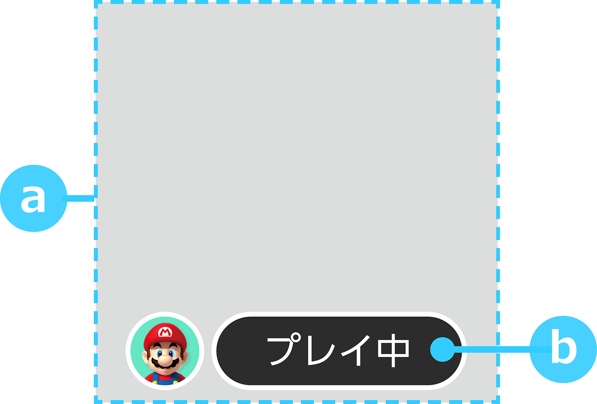

There are two types of application icons: those for use on Switch and those for use on smart devices.
| Procedure | Description | Notes |
|---|---|---|
| 1 |
Create an image in BMP format. (This image will be referred to as the original image.) |
― |
| 2 | Load the original image created in step 1 into Authoring Tool. | Images for Switch and for smart devices are automatically created from the original image. You can also use the following format to design and set your own image for Switch. |
| 3 | Test the appearance of the Switch icon on the NX development hardware. |
If you install the ROM created using Authoring Tool onto the NX development hardware, you can test the icon in the HOME Menu and others. |
| Size |
1024 pixels wide by 1024 pixels high |
| Resolution (DPI) | No restrictions |
| Save Format | BMP |
Authoring Tool is a command-line tool for creating ROMs from a program, application icon, or software legal information.
| For Switch | For Smart Device Applications | |
| Size |
256 pixels wide by 256 pixels high |
1024 pixels wide by 1024 pixels high |
| Resolution (DPI) | No restrictions | 72 |
| Capacity | Max 100 KB | No restrictions |
| Save Format |
JPEG |
JPEG |
| Notes |
If the image that was automatically created by Authoring Tool does not meet the expected level of quality, you can directly specify an image for Switch that you designed in Authoring Tool. That image will be used as is for Switch in such cases. The automatically created image will only be used for smart device applications. Use the same image as that from the original when creating your own Switch image. Ensure that it meets these format requirements. Do not change things like the logo placement from the original image. Note that you cannot submit a master when different from the original image. |
You cannot create and set this on your own. |

| Number | Element | Description | Notes |
|---|---|---|---|
|
|
Title Logo | We recommend the placement of a title logo. | ― |
| Main Visual |
We recommend using main visuals that provide an impression of the application's content. |
Take care not to obscure any important information, such as logos or the faces of characters. |
| Number | Element | Description | Notes |
|---|---|---|---|
|
|
Playing display | Automatically displays beneath the application icon when application is paused. |
|
When you create the original image for an application icon, you can use the following files, which include layouts for information such as display during pause: application_icon_format_XXXXXXXX.psd or application_icon_format_XXXXXXXX.ai.
Application icons are automatically edited in certain cases. For example, the corners can be rounded depending on where the icons are used. Avoid placing any critical information at the corners or designing the icon based on specific outer shapes.
Creators do not need to round the corners.
CONFIDENTIAL